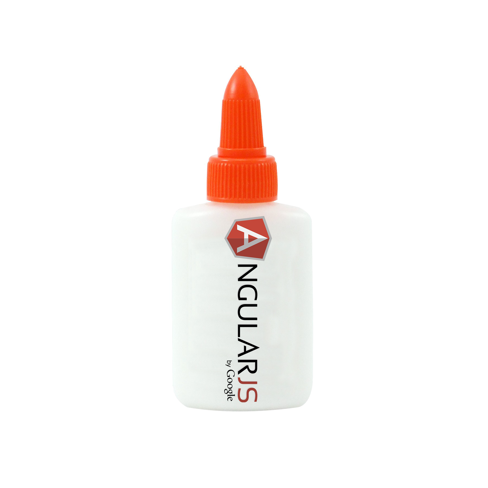

Building
SPAswith

What is AngularJS?
It's HTML, JavaScript, CSS enhanced for web apps.
Extend HTML
"It lets you use HTML as your template language and lets you extend HTML's syntax to express your application's components clearly and succinctly."
[1]
Client-side powered
"And it all happens in JavaScript within the browser, making it an ideal partner with any server technology.”
[1]
What are SPAs?
"Single-Page Applications (SPAs) are Web apps that load a single HTML page and dynamically update that page as the user interacts with the app.”
[2]
General Architecture of SPAs
.png) [2]
[2]
MVC in AngularJS

[3]
Modules
$scope
The glue for the View and Controller
Controllers
Augment the Angular Scope
Intended purposes:To setup initial state of a $scope object and
Extend behavior to a $scope object
Controller prototypical inheritance
Intended purposes:
Directives: extend HTML!

Built-in directives:
ngRepeat
ngShow
ngModel
ngBind
Custom directives:
Data-Binding
Hello, {{yourName}}!
Expressions
Filters
Services
$http
Promises
Conclusion
So, Are there any Questions?
References
Use a spacebar or arrow keys to navigate